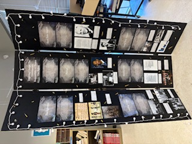

I am a 14 years old first generation immigrant, with today being my birthday, May 14 2011. I have been at Amana since the 5th grade. Some of my hobbies include coding, robotics, web-development, and game design. During the 4 years that I have been here, I have been a part of the National Junior Honor Society as a secretary, the Student Government Association, the Model United Nations club, and the National History Day Association. During my time at Amana, I have been trying to improve my skills in coding and robotics. I have achieved this through smaller goals and projects, like my tech fair projects, for example, Prehistoria, a video game about taming dinosaurs, which passed the Amana Tech Fair and Fulton County Tech Fairs. My current goal is to use Unreal Engine inorder to create a physics based video game. Some of my future desires as an adult is to be a computer hardware engineer.
I am an Amana student, but not just any Amana student. At the beginning of the 5th grade, I was quiet, unsure, and still learning how to navigate the expectations of a new school. Over the years, I’ve grown into someone who is confident, responsible, and ready for a challenge. Amana has helped me build strong academic skills, develop leadership, and understand the importance of community and hard work. One of the many ways that Amana has helped me grow in this way, is through their National Junior Honor Society Program. NJHS has given me many opportunities to show and to improve on my public speaking, and leadership skills, thanks to our NJHS advisor, Mrs. Hussain. Some of these opportunities includes docenting, presentations, and group leadership activities. Amana has also provided me with the opportunity to improve my public-speaking skills through their annual Tech Fair. Every year, I presented infront of a group of judges whatever I created. Another way that Amana helped me become less shy and more outgoing, was through their Arabic classes. Being able to speak and understand another language gives me more opportunities and connects me to more people and cultures. Reading and writing skills in both English and Arabic help me communicate clearly, whether I’m working on school assignments, personal projects, or future career goals.
.jpg)
At the beginning of 5th grade, school felt overwhelming. New expectations, new subjects, and a lot of uncertainty. But over the years, that changed. Through projects, challenges, and real-world learning at Amana, I’ve grown into someone who thinks deeply, works with purpose, and cares about making a difference. Throughout the 8th grade stem expedition, I demonstrated three important design principles, Empathy and Caring, Success and Failure, and Responsibility for Learning. I also showed three High Five Habits: Compassion, perserverance, and responsibility.
Empathy and Caring

I showed Empathy and Caring in my MUN Resolution, as I learned about the horrors of human trafficking and the result of it in New Zealand. In my research, I found that many people were exploited for laborous work with little to no pay, and that many people were also used for commerical sex acts, even children. This research led me to empathize and truly care for the people subjected to trafficking, and it soon became my responsibility to create a working resolution that could truly solve the issue worldwide.
Success and Failure

Success and Failure came into play when I was building my STEM app for the homelessness. There were many technical challenges, especially when it came to making the app simple to use, mobile-friendly, and accessible. I had to keep improving the design, rewriting parts of the code, and going back to fix errors until it worked. Perserverance was needed for me to fully complete this project, or I would have given up within the first week of development.
Responsibility for Learning
Finally, I showed Responsibility for Learning in my NHD Project, titled, Triggering Change: The Government's Responsibility to Protect Our Rights. In this project, I worked in a group along with my friends and researched about the National Firearms Act of 1934, the reason for its passing, and its events. I went through many articles and credible sources like the Library of Congress, Presidential Libraries, and others. I learned about the many bills that were passed after the NFA and their overall effect to the country. I ensured that I understood my part and that I did my research correctly, ensuring that I learned all about the NFA and its effects.
This project not only helped me grow in my design thinking and coding skills, but it also showed me how technology and empathy can work together to solve real problems. In the future, I hope to keep building tools that make a difference — and the habits I’ve practiced at Amana will help guide me every step of the way.
Looking back, I can see just how much I’ve grown since 5th grade. From feeling overwhelmed to confidently solving real-world problems, my journey at Amana has shaped who I am today. Through design thinking, high-quality projects, and the High Five Habits, I’ve learned how to think critically, act responsibly, and create with compassion. Whether it’s a tech fair project that has gone to state level or pushing through challenges in my everyday classes, I now approach every problem with purpose. These experiences have prepared me not just for high school, but for life beyond the classroom, and I’m excited to keep learning, growing, and making a difference in the world.


My family has always been my strongest support system. Whenever I faced challenges — whether it was school stress, tough projects, or moments when I doubted myself — they were always there to remind me of what I’m capable of. They encouraged me when I felt stuck, and pushed me forward when I lost motivation. Whether it was helping me stay organized, listening to my ideas, or just being there to cheer me on, their belief in me never wavered. Their constant encouragement and love gave me the strength to keep going, even when things felt overwhelming. I wouldn’t be who I am today without them.
My teachers have been one of the greatest influences on my education. They didn’t just teach, they inspired. They made learning engaging, meaningful, and fun, while always encouraging me to push beyond my limits and stay curious. Their support, patience, and belief in my potential helped me grow into a more confident and capable student.
.jpg)
.jpeg)
.jpg)
My friends made my time at Amana unforgettable. They turned every field trip, event, and classroom moment into something special. Whether we were working on projects together or just having fun, their friendship made every experience more meaningful. They brought joy, laughter, and support into my school life, and I’m grateful for the memories we’ve made together.